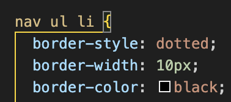
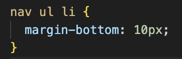
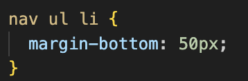
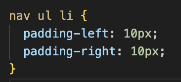
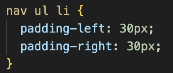

Whether you have experience in web development or are a beginner, it’s important to understand the differences between margin, border and padding. It can make a huge difference to the layout of your website, with just simple adjustments to each of these properties.
The border defines a - get this- border around the element’s padding area (see below). It consists of three sub-properties ‘border-style, border-width, border-color’. The border acts as a separator for the padding and the margin.
| Input | Output |
|---|---|
|  |
You can see that I have added all three characteristics mentioned above: 'border-style, border-color and border-width'. I have chosen a dotted border, a 10 pixel width and the black colour. You can see how it envelopes the element. The padding sits inside of this border and the margin sits outside this border. Please see below for what these mean.
The margin defines the space outside of an element. It creates a space between the element’s border and other elements. The margin doesn’t necessarily have a colour, as it determines the space between different elements.
| Input | Output |
|---|---|
|  |
You can see above that I have made my margin for these pictures to be 10 pixels. Note that the margin has no set colour, so it just shows up as the darker purple colour.
| Input Change | Output Change |
|---|---|
|  |
You can see that I've changed the margin to be 50 pixels at the bottom, so it has increased the size of the dark purple colour underneath our headings here.
Padding, on the other hand, defines the space between the element’s contents and its border. This is the internal space of the element.
| Input | Output |
|---|---|
|  |
You can see above that I have made my left and right padding 10 pixels for each of the headings. This increases the space on the inside of the element, so it shows up to us with the background colour of the element (lighter purple)
| Input Change | Output Change |
|---|---|
|  |
You can see that I have increased the padding here to 30 pixels, which results in our headings boxes stretching a bit. Since it's the space inside the element stretching due to the padding, the lighter purple colour increases in size.
Well, since they are not one and the same, they can all work together. Below is an example from the Chrome Developer Tools, to show the relationship between the three of them:
In some ways, it may help to think of the border separating both the padding and the margin. The margin ensures space outside of the element and padding ensures space on the inside of the element, before the border.